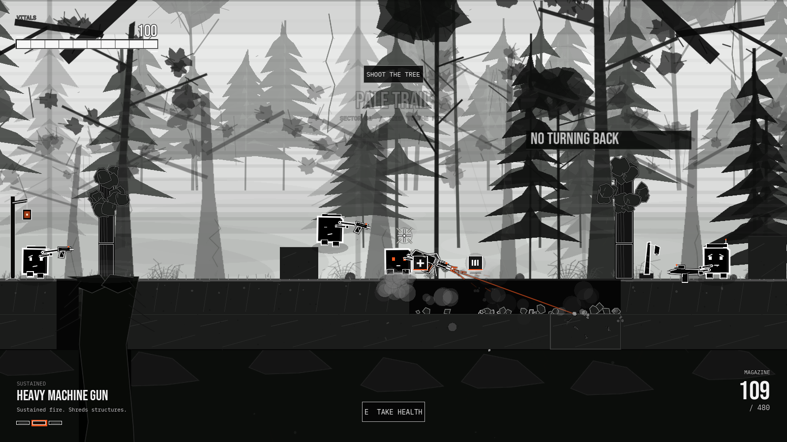
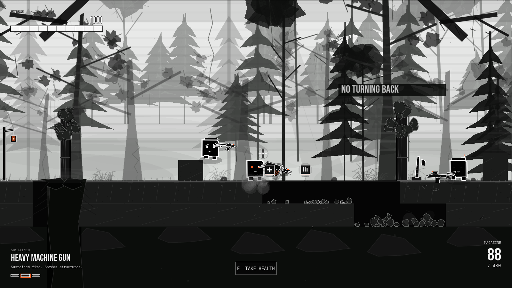
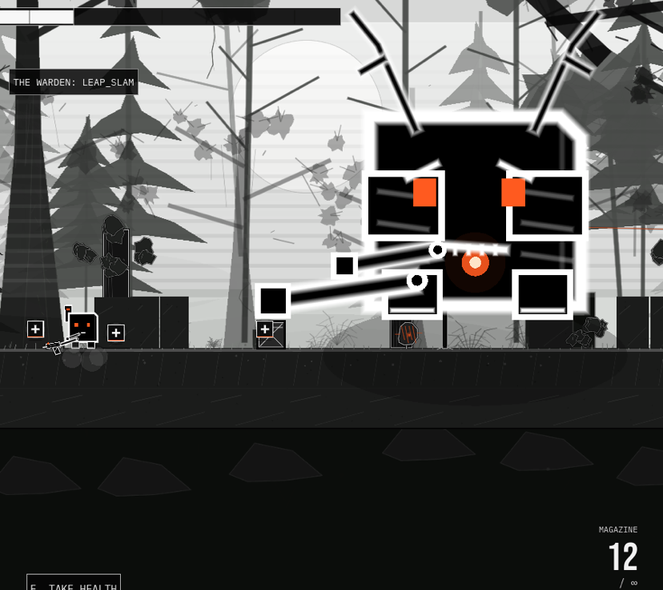

A game by achlys20
BLACKOUT
A five-sector monochrome forest shooter. Carve the ground open, break a giant, and learn to fly.
macOS 11+ / Windows 10/11 x64 / desktop browser

Browser run
Straight into the trees.
Jump with W. Keep holding W to fly. Move with A/D, aim with the mouse, and put a hole in anything that looks load-bearing.

The browser build is the full game. If the frame feels small, use fullscreen.
The run
The forest is not cover. It is ammunition.
BLACKOUT moves through Pale Trail, Fern Gallery, Hollow Grove, Charcoal Camp, and the Warden's Clearing. The painted forest holds the depth. The ground, trees, boulders, camps, and root bridges are built to come apart.
Enemies flank, take cover, dodge rockets, and pull the next squad into the fight. The rocket launcher does 700 anti-armor damage. The HMG is still the long argument.
- Weapons
- Seven, from sidearm to 700-damage rocket.
- Terrain
- Two carvable layers over bedrock. Holes stay.
- Flight
- W jump. Hold W for variable-height boost.
- Boss
- 12,000 health. Two forms. One heartwood core.
The Warden
He does not get smaller.
At half health the Warden rips roots out of the arena and grows into the Rootbound form. Antlers. Bark armor. An exposed heartwood core. Leap slams, root cages, canopy barrages, ground sweeps, and a below-25% Heartwood Overload.
A Phase II checkpoint means death resumes at the Rootbound fight. Two health caches open the fight; one more appears at Phase II. Nothing else heals you.
Take the run
Downloads
Take it off the browser.
Both builds are complete. The browser version above is the same run.
macOS: unzip and open BLACKOUT.app. It is ad-hoc signed; if Gatekeeper asks, right-click → Open.
Windows: unzip the whole folder. Keep BLACKOUT.pck beside BLACKOUT.exe. SmartScreen may ask for “More info → Run anyway”.